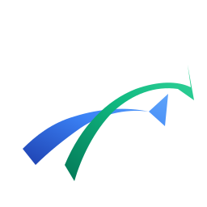
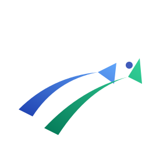
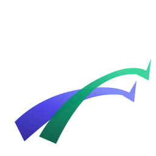

Référence : ton oiseau actuel (avec fond blanc).
Les variantes ci-dessous reprennent le même mouvement ascendant, sans la plate.
Les variantes ci-dessous reprennent le même mouvement ascendant, sans la plate.
Toutes sans fond, alignées palette landing. Tester à 16px (taille barre de tâche).
Première version proposée. 2 courbes plates bleu + vert. Référence pour comparaison.
Courbes Bézier plus fluides + gradients linéaires bleu profond → bleu clair, emerald → mint. Volume sans surcharge.

Courbes plus longues qui s'amincissent vers la pointe. Petit point indigo qui suggère une "tête / direction". Plus dynamique.

Indigo #4F46E5 + emerald #059669 exacts de la landing. Composition asymétrique : aile basse ancrage, aile haute mouvement. Style SaaS contemporain.
